也紀念我們永遠的朋友 李士傑先生（Shih-Chieh Ilya Li）。
CentOS 基礎設定（下）
前言
在前二篇文章 CentOS 基礎設定（上）以及 CentOS 基礎設定（中），我們學習了 CentOS 主機的基礎設定。這些設定分別是：建立一般使用者帳號以便管理時使用；網路連線設定及連通測試；了解 SELinux 安全增強機制；將遠端允許 root 管理帳號登入的權限移除，以降低 CentOS 主機被密碼暴力測試工具攻擊的機會；了解 CentOS 主機的啟動流程，以及知悉何謂啟動模式等級 RunLevel；建立順手的操作環境 Shell 及檔案編輯器 VIM 環境設定；透過 sudo 建立管理者帳號的使用機制；將套件管理工具 YUM 下載來源由國外重新指向至台灣本地鏡像網站，以便縮短軟體套件及相依套件的下載時間。
本篇文章是 CentOS 基礎設定系列文章的最後一篇。首先要學習的是，當 CentOS 主機安裝設定完成後設定上線運作的方法，使系統定期自動寄送系統的相關記錄，並發至 CentOS 主機管理人員的郵件信箱內。這些相關紀錄包含：主機硬碟空間的使用率、郵件發送情況、網路服務運作狀況等資訊。因此企業中忙碌的 IT 管理人員，每天僅需檢查所收到的系統資訊郵件內容、檢查磁碟空間是否足夠、注意主機有無被攻擊的狀況等，並進行適當的調整即可，而不需要每天手動遠端登入至 CentOS 主機查看相關訊息，以節省寶貴的時間。
接下來學習的是，CentOS 遠端連線 SSH 的基本安全性保護設定，並在主機上線後，將系統時間定時自動與網際網路上的時間伺服器，或者與企業內部自行架設的時間伺服器校對時間。了解系統在進入啟動模式等級 RunLevel 後，會將哪些服務啟動，以及開啟哪些相對應的 Port。同時視系統需求關閉不必要的服務，以減少系統的負載並降低系統被攻擊的機會。最後，則是透過安裝 RPMforge，來增加 YUM 套件管理工具中可安裝的套件數量。
實作環境
* CentOS 5.5 32bit (Kernel 2.6.18-194.el5)
* sendmail-8.13.8-8.el5
* logwatch-7.3-8.el5
* xinetd-2.3.14-10.el5
* tcp_wrappers-7.6-40.7.el5
* pstree (PSmisc) 22.2
* yum-3.2.22-26.el5.centos
* rpmforge-release-0.5.2-2.el5
收集系統資訊後定期寄送給管理人員
當 CentOS 主機安裝、設定完畢並上線運作之後，我們希望主機能夠在固定時間（如每小時、每天、每週、每月）發送相關資訊至主機管理人員清單位址，讓主機管理人員能獲取系統上的服務運作狀態和硬體使用狀況相關資訊。主機的管理人員只要定期查看每台管理主機的資訊郵件內容，即可進行適當的處理，或轉交給相對應的人員接手處理。
CentOS 主機的預設排程為每小時的 01 分、每天凌晨 4 點 02 分、每週日凌晨 4 點 22 分，以及每月 1 號凌晨 4 點 22 分。此時，系統會執行預先撰寫好的自動維護 Shell Script 執行檔，進行系統相關的清理及備份工作，並使用預設的郵件轉送代理 (Mail Transfer Agnet, MTA) Sendmail 寄送資訊郵件。欲使用別的郵件轉送代理像是 Postfix、Qmail 等 ，屆時只要在設定檔內進行指定即可。若讀者有興趣了解系統定期執行的詳細內容，可切換至 /etc 目錄下的四個資料夾，分別是：每小時 (cron.hourly)、每天 (cron.daily)、每週 (cron.weekly)、每月 (cron.monthly)，每個資料夾內都有相關的自動維護 Shell Script ，查看後即可了解系統維護主機的相關內容。
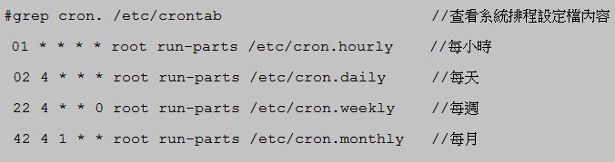
▲ 圖1 查看主機系統排程資訊
在 CentOS 系統中，LogWatch 套件負責收集系統狀態及相關網路服務運作資訊（預設情況下會安裝至系統）。我們可以在每天定期發送的 cron.daily 資料夾中，發現 0logwatch 這隻 Script。也就是說，系統會在每天凌晨 4 點 02 分時，透過此 Script 將系統中系統、硬體、服務的資訊收集後，寄送給各個管理者。接下來便說明相關資訊的設定方法，如：由哪台主機寄出收集後的資訊、寄件對象、系統資訊收集分析的等級、收集主機服務運作的狀態設定等。
我們可以將相關設定值寫入至 LogWatch 設定檔 "/etc/logwatch/conf/logwatch.conf" 內，操作中相關設定值參數及說明如下：
* MailFrom：通常填入此台主機的主機名稱 (Hostname)，或是該主機所擔任的企業服務名稱（如 Web1）。
* MailTo：填入管理者們的郵件信箱 (Email)。若有多筆郵件位址，則使用逗點 (, ) 加上空格進行隔開即可。
* Detail：指定收集主機資訊後分析的等級，共有三種等級可供選擇。分別為低級（Low 或數字 0）、中級（Med 或數字 5）、高級（High 或數字 10）。
* Service：指定收集主機服務運作的項目，LogWatch 支援收集服務的項目為 /usr/share/logwatch/scripts/services 目錄下的服務名稱，您可以使用參數 All 來表示要收集該主機所有運作的服務。若不想分析某個服務，則可於服務名稱前加上減號 ( - )，則系統便會排除收集該項服務的運作狀態。
下列為筆者的 LogWatch 設定檔設定內容，若您需要更詳細的參數設定內容可參考 "/usr/share/logwatch/default.conf/logwatch.conf" 設定檔內容
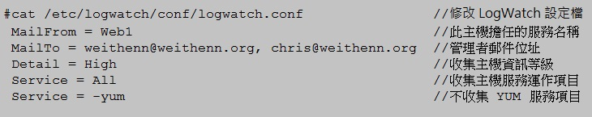
▲ 圖2 LogWatch 設定檔內容
設定完畢之後，CentOS 主機便會自動於每天凌晨 4 點 02 分時，收集主機資訊後寄送至管理者郵件信箱內。如果您想要立即收到資訊郵件，可以手動執行 logwatch 指令，命令主機立刻收集資訊並寄送郵件，或配合參數 --print 直接顯示收集到的資訊，查看收集到的資訊而不寄送郵件（此資訊和資訊郵件的內容完全相同）。您還可以配合參數 --service ，僅顯示收集的服務名稱運作狀態。
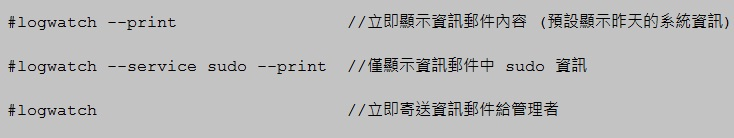
▲ 圖3 logwatch 查看指令以及立即寄送資訊郵件操作
如果您已經設定完成，但並沒有定期收到資訊郵件的話，可以先用 mailq 指令，查看郵件是否被佇列 (Queue) 住。接著，檢查郵件記錄檔 /var/log/maillog 內容以及主機的 DNS 設定，分析並查找管理者沒有定期收到主機所收集資訊郵件的原因。此外，由於系統會在隔一段時間後才送出郵件，若您執行 logwatch 指令寄送郵件時，發現郵件在郵件佇列中而未立即寄出，可執行 sendmail 指令，配合參數 –q，使主機立刻寄出郵件佇列中所有郵件。
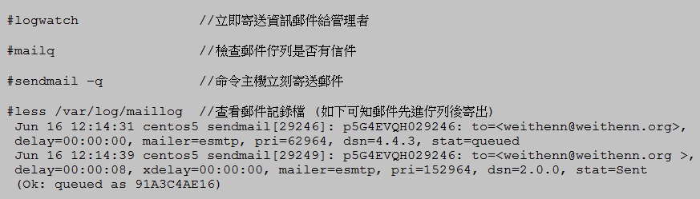
▲ 圖4 檢查郵件佇列及查看郵件記錄檔以及立刻寄送郵件出去
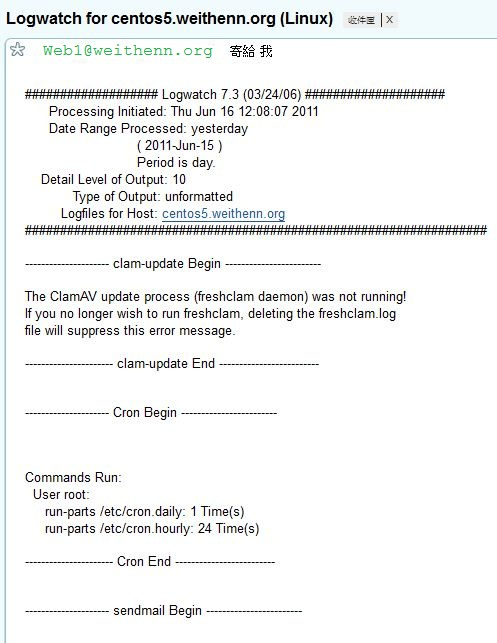
▲ 圖5 管理人員收到的每日系統資訊郵件內容
SSH 基礎安全防護設定
在 CentOS 主機中，我們可以利用許多機制來保護主機服務。IPTables 防火牆功能強大，是安全防護選項之一，但本文中並不打算講解有關 IPTables 防火牆設定（若要講解的話得再開一系列文章），而是要介紹另一個設定簡單，有一定保護程度的安全機制 TCP Wrappers 達到保護 SSH 遠端連線服務的效果。此服務與系統內的 xinetd 服務有很深的關聯，下圖便清楚表達了當網路封包進入 CentOS 主機時，Firewall、TCP Wrappers 及 xinetd 服務的封包走向關係圖。
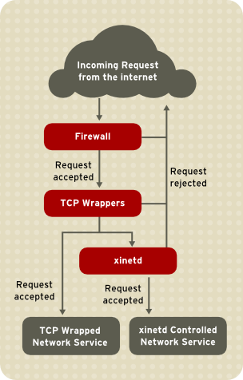
▲ 圖6 圖片來源 CentOS 官方網站 Deployment_Guide - 42.5. TCP Wrappers and xinetd，採用 Open Publication License
預設情況下，TCP Wrappers 在安裝 CentOS 主機過程中便已安裝完成。而顧名思義，此安全防護機制僅能保護 TCP daemon，而無法保護 UDP daemon（仍有例外狀況）。相信您會接著問，那 TCP Wrappers 能夠保護主機上哪些服務項目呢？ 答案是，只要該服務中含有 libwrap 函式庫 (Library)，即可受到 TCP Wrappers 保護。經由下列操作，我們便可了解如何檢查該服務內是否含有 libwrap 函式庫。在圖 7 中，我們可以看到 SSH 服務 (sshd) 含有 libwrap 函式庫，而 Apache 服務 (httpd) 則沒有包含 libwrap 函式庫。所以雖然都是 TCP daemon ，但 TCP Wrappers 可以保護 SSH 服務，而無法保護 Apache 服務。
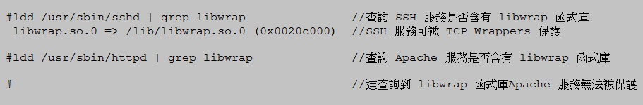
▲ 圖7 查詢 TCP Wrappers 是否可以保護該服務
接著要說明的是 TCP Wrappers 的保護規則。在安全防護設定上，TCP Wrappers 非常簡單易懂，不像防火牆設定那麼複雜。其安全防護規則採用 First Match 方式，意即先讀取到的規則直接套用執行後，便不需要理會後面的規則。
TCP Wrappers 的防護規則分為 "/etc/hosts.allow" 及 "/etc/hosts.deny" 二個設定檔。這二個設定檔中，首先讀取的設定檔為 hosts.allow，若此設定檔中有設定服務名稱，則允許封包通過，接著讀取 hosts.deny 則為禁止封包通過。筆者建議僅設定 "/etc/hosts.allow" 設定檔便可達到防護效果。
在修改 TCP Wrappers 保護規則設定檔 (/etc/hosts.allow) 以前，我們先了解設定檔的內容及相關參數的意義。設定檔內容可以分成三個小區段來看，分別是「服務名稱 (deamon)、來源 IP 位址或網域名稱 FQDN、連線回應為允許 (allow) 或拒絕 (deny)」。每個小區段之間使用冒號 (:) 作為分隔符號，在前面二個小區段中並支援相關進階參數，使保護規則運作更靈活。但是，若使用 KNOWN、UNKNOWN、PARANOID 參數時，請注意此三個參數是依靠 DNS 名稱解析服務，因此必須要注意主機上的 DNS 名稱解析是否運作正常，相關進階參數說明如下：
* ALL：表示 「全部 」，用於第一個小區段（服務名稱欄位）表示全部服務，用於第二個小區段（連線來源）表示全部的 IP 位址或網域名稱 FQDN。
* LOCAL：表示「本機」，也就是不含點 (.) 的主機名稱例如 localhost。
* KNOWN：表示「可解析主機」，也就是可以解析其 IP 位址及網域名稱 FQDN。
* UNKNOWN：表示「無法解析主機」，也就是無法解析其 IP 位址及網域名稱 FQDN。
* PARANOID：表示「正反解析必須一致」，也就是 DNS 正解（FQDN 解析 IP 位址）及 DNS 反解（IP 位址解析 FQDN）二者的解析記錄必須一致。
* EXCEPT：表示「排除」的意思，例如允許 192.168.1.0 這個網段的所有主機，但排除 192.168.1.99 這個 IP 位址。
在設定之前，還有三個小地方要提醒讀者注意。首先是來源 IP 網段的遮罩設定值，TCP Wrappers 支援的網路遮罩為 255.255.255.0 這種型式，而不是 /24 這種 CIDR 表示方法。若您設定 /24 這種網路遮罩，則該行防護設定規則將無法運作（但若是來源位址使用 IPv6 位址則支援此種表示方法）。第二點要注意的是，修改 TCP Wrappers 設定檔內容後，當您存檔離開的那一剎那，所設定的防護內容便立刻生效（不需要重新啟動或載入 xinetd 服務）。最後要注意的是，防護規則僅套用於「新進 Session」，也就是說，設定阻擋規則時主機上若已經存在有舊的連線 Session，並不會自動斷線離開，而是新進來的 Session 才會阻擋。
CentOS 在預設情況下並不會安裝 xinetd 套件，我們可以透過前一篇介紹的 yum 指令來安裝 xinetd 套件。此次我們以防護主機上的 SSH 服務為例，設定只有允許的 IP 網段可以使用 SSH 遠端登入此台 CentOS 主機（允許連線後接著才進行使用者帳號及密碼驗證），並且拒絕允許的 IP 網段中，其中一台主機的連線要求。最後，其餘的 IP 位址欲嘗試使用 SSH 遠端登入主機時，則拒絕其連線要求。由於已經拒絕連線要求封包，因此主機自然就不需要回應使用者帳號及密碼的驗證動作，此舉能夠有效減低 CentOS 主機被進行密碼暴力測試工具攻擊的機會，提升主機整體安全性。
下列操作步驟包含利用 yum 套件管理工具安裝 xinetd 套件，查看 xinetd 服務是否在 CentOS 主機啟動時自動啟動 xinetd 服務，確認無誤後啟動 xinetd 服務。接著設定 TCP Wrappers 設定檔 (/etc/hosts.allow)，其內容為允許 192.168.1.0 整個 C Class 網段主機 SSH 遠端連線至此台 CentOS 主機，除了 192.168.1.99 禁止連接。最後，其餘 IP 網段若發出 SSH 遠端連線要求時，則直接拒絕該連線封包。
▲ 圖8 安裝 xinetd 套件及設定 TCP Wrappers 安全防護規則
上述 TCP Wrappers 防護規則設定完成後，我們可以進行驗證，檢查剛才設定是否生效。我們由 192.168.1.99 主機對目前 CentOS 主機 (192.168.1.50) 發出 SSH 遠端連線要求，並得到 Connection closed 的連線拒絕回應。在 CentOS 主機上，我們查看 secure 記錄檔也可看到 192.168.1.99 主機嘗試 SSH 遠端連線此台主機，並遭到拒絕連線 (refused connect) 的回應。而 192.168.1.0 網段中的其它主機發出 SSH 連線要求時，則會出現驗證帳號密碼的動作。
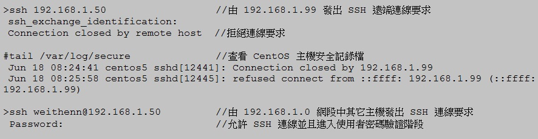
▲ 圖9 驗證 TCP Wrappers 防護規則是否生效
經過上述實作驗證後，相信讀者已經了解如何用簡單的 TCP Wrappers 安全防護規則，來保護 CentOS 主機。若您認為 TCP Wrappers 只有這些功能的話，那您就大錯特錯了。TCP Wrappers 支援更進階的安全防護規則內容，例如嘗試連線記錄、結合 Shell 指令等功能。但是在這些進階的防護功能中， 嘗試連線記錄必須要搭配系統的日誌服務 (syslogd) 才得以運作，而結合 Shell 指令功能，除了必須對系統指令有一定程度了解之外，還必須了解如何搭配相關的參數，才得以發揮強大效果。建議有興趣更深入的讀者，可以參考 CentOS 官方文件 Deployment_Guide - 42.5. TCP Wrappers and xinetd 內有進階設定的詳細說明。
系統時間自動校對
網路時間協定 NTP (Network Time Protocol) 最初由德拉瓦州大學 (Delaware University) 的大衛米爾斯 (David L. Mills) 所設計，主要目的為透過網路封包交換 (UDP Protocol, Port 123)，將二端電腦的時鐘進行同步校對。若讀者想更詳細了解整個 NTP 協定的規範、實作、分析等詳細內容，請參考 RFC 1305 (NTP version 3)、RFC 5905 (NTP version 4)。
企業營運環境的伺服器為數眾多，倘若伺服器之間的時間不同步，可能會造成許多影響。例如伺服器之間的時間誤差超過 5 分鐘時，則將導致 Kerberos 的驗證失敗；或者，當企業購物平台的前端 AP 伺服器與後端資料庫伺服器時間不同步時，則使用者下單記錄可能在資料庫伺服器上顯示為未來時間，或是優惠活動時間明明已經結束，但使用者仍然可以下單購買，造成客服人員的困擾；再者，公司財務報表產生時，若伺服器之間的時間不同步，則會造成財務報表合併時在核對上出現困擾。以上舉例的種種問題，追究其原因，便是由於眾多伺服器之間時間不同步所造成。
在此次設定中，我們為 CentOS 主機安裝 OpenNTPD 客戶端，來進行系統運作時間校對。OpenNTPD 客戶端與一般的 NTP 客戶端時間校對方式有著明顯的不同，一般 NTP 客戶端的時間校對方式為「強迫性一次調整到位」，也就是不管現在系統時間，一律直接跟 NTP 伺服器校對後調整。偏向暴力性的一次到位調整時間的方式，在某些狀況下可能會對主機運作穩定性上產生問題。而此次安裝的 OpenNTPD 客戶端的時間校對方式為：當 OpenNTPD 客戶端與 NTP 時間伺服器有時間誤差時，OpenNTPD 客戶端會將主機每隔幾分鐘進行系統時間「微調」，慢慢調整，直到最後與時間伺服器上的標準時間達成一致。這樣溫和的時間調整方式，對於要求高穩定性的企業營運環境伺服器來說，相對而言是比較適合的。
在安裝 OpenNTPD 客戶端以前，請您先使用 rpm –qa 指令來確認 CentOS 主機是否已經安裝 gcc 及 make 套件（若系統沒有安裝，請使用 YUM 套件管理工具進行 yum –y install gcc make 安裝指令），以便在安裝 OpenNTPD 套件時能順利進行編譯 (Compile) 與安裝 (make)。在設定前，您可以故意先將 CentOS 主機系統時間調慢 5分鐘，待之後啟動 OpenNTPD 服務後，即可發現系統開始跟 NTP 時間伺服器慢慢進行時間校對。
在 CentOS 預設的 YUM 套件管理工具中，並未收錄 OpenNTPD 軟體套件，因此請自行從 OpenBSD 的鏡像站台下載、解壓縮、編譯，並安裝 OpenNTPD 套件。下列操作步驟為先利用 wget 指令下載 OpenNTPD 套件至 /tmp 資料夾下，並將 OpenNTPD 套件檔案解壓縮後執行 ./configure、make、make install 等指令，將 OpenNTPD 套件編譯並進行安裝。
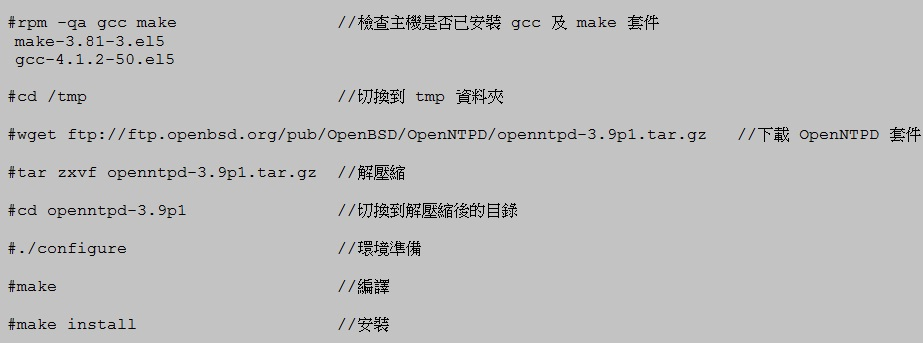
▲ 圖10 OpenNTPD 套件下載、解壓縮、編譯、安裝
在上述最後執行套件安裝的動作 make install 時，我們可以看到，系統提示我們必須要為系統建立 _ntp 的使用者帳號及群組，以便屆時使用 _ntp 使用者帳號來啟動 OpenNTP 服務，而非使用 root 管理者帳號，以避免安全性問題。因此安裝完畢後，請使用 useradd 及 groupadd 指令，配合相關參數來新增 _ntp 使用者帳號及群組，接著設定 OpenNTPD 設定檔，指向至企業內部所架設的 NTP 伺服器或網際網路上的 NTP 伺服器 IP 位址。接下來如圖11 將 NTP 伺服器指向至國家時間與頻率標準實驗室，進行時間校對。最後，設定 OpenNTPD 記錄檔來記錄主機時間校時的狀況，並在完成後重新載入系統日誌服務 syslogd，讓其變更生效即可。
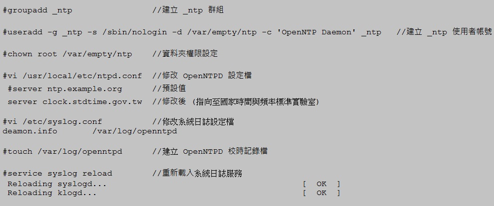
▲ 圖11 完成 OpenNTPD 客戶端相關設定，並建立記錄檔了解校時狀況
接著將 OpenNTPD 新增至 CentOS 內建的服務清單內，設定當 CentOS 重新開機時能夠自動啟動 OpenNTPD 服務，自動與國家時間與頻率標準實驗室 NTP 伺服器進行時間校對作業。完成設定後即可啟動 OpenNTPD 服務，並透過剛才建立的記錄檔來觀察目前主機與 NTP 伺服器進行時間校對的情況。
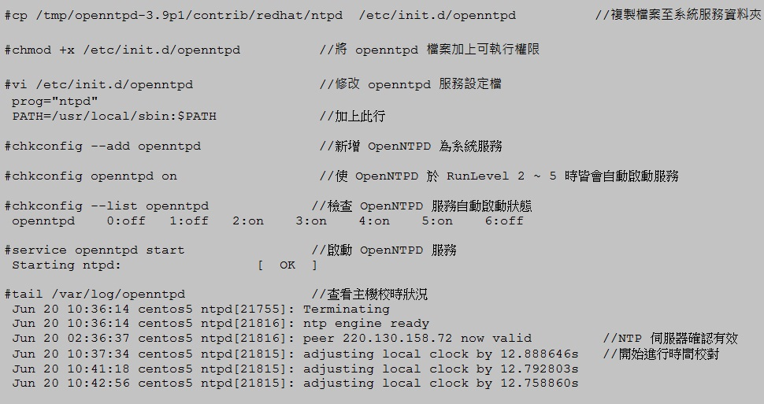
▲ 圖12 新增 OpenNTPD 為系統服務並查看主機校時情況
查看系統啟動服務及監聽 Port 號
了解系統啟動的服務以及該服務開啟的相應 Port ，也是主機安全防護的基本功。我們可以使用內建的 netstat 指令，配合 –tunpl 參數，顯示系統目前啟動服務及協定等相關資訊。使用到的 5 個參數意義為 t (TCP)、u (UDP)、n（IP 位址及 Port 號）、p（PID 名稱）、l (Listen) 服務，這些指令執行後顯示出來的相關欄位解釋如下：
* Proto：服務運作的協定，通常為 TCP 或 UDP Protocol
* Recv-Q：收到的封包 Bytes 數量
* Send-Q：傳送的封包 Bytes 數量
* Local Address：本地端的 IP 位址及 Port 號
* Foreign Address：遠端主機的 IP 位址及 Port 號
* State：連接狀態，此例中僅顯示 Listen 狀態，實際上還有已建立連線 (ESTABLISHED)、連線結束等待 Socket 關閉 (TIME_WAIT)、主動連線 SYN 封包 (SYN_SENT)、連線要求 SYN 封包 (SYN_RECV)等狀態。
* PID/Program name：該程序 (Process) 的名稱
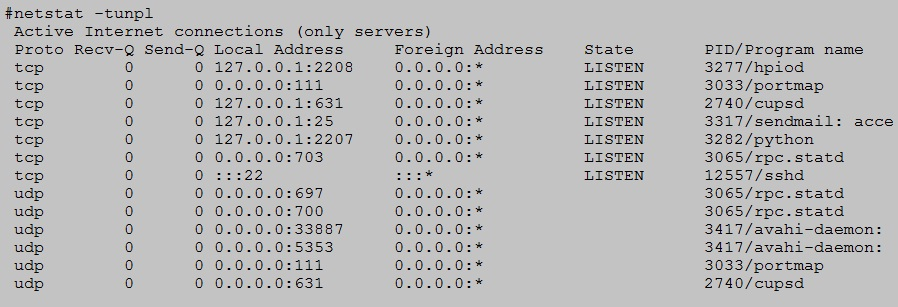
▲ 圖13 查看主機目前啟動的服務及相對應的 Port 號
透過運用 netstat 指令了解 CentOS 主機執行哪些服務 (daemon)，與開啟哪些 Port 號之後，我們可以進一步透過了解執行序，在系統或服務出現問題後利於除錯。若只是要查詢系統有哪些執行序時，我們可以使用內建的 ps 指令，配合相關參數進行查詢。但若是想要了解執行序的樹狀結構（意即母程序及子程序的樹狀關系）時，內建的 ps 指令可能就略顯不足。此時可以配合 pstree 套件來輔助我們即時了解執行序樹狀結構，例如我們查詢剛才執行的校時程序 ntpd 的執行序樹狀結構，可以看到整個 ntpd 的母程序 PID 為 21815，並且使用 _ntp 使用者帳號負責帶起子程序 PID 21816。
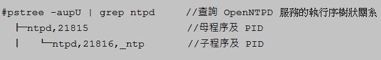
▲ 圖14 查詢 OpenNTPD 服務的執行序樹狀關系
接著我們可以使用 chkconfig 指令，以了解 CentOS 主機在開機時進入不同的 RunLevel 時會啟動的服務。我們以主機所擔任的服務，來判斷是否有些不會用到的服務，例如 acpid (Advanced Configuration and Power Interface) 電源進階設定，這個服務是將 CentOS 安裝於筆記型電腦上才會發揮效用，所以我們就可以將該服務關閉。此舉除了可以增加系統效能（啟動每個服務都會佔用記憶體），還可以避免該服務被攻擊，增加系統安全性。
下列操作為 CentOS 主機預設啟動程序在 RunLevel 3 的狀況下，我們使用指令 chkconfig 指令配合相關參數，來了解系統在 RunLevel 3 時，開機會自動啟動哪些服務：
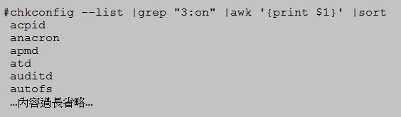
▲ 圖15 檢查主機於 RunLevel 3 啟動時會啟動哪些服務
當您決定哪些服務要開啟，而哪些服務要關閉後，就可以執行「關閉啟動主機時不啟動服務」或是「停止該服務」。下列操作中，我們以 acpid 服務為例進行設定，當主機由 RunLevel 3 啟動模式啟動時，不會自動啟動該服務，並在目前運作模式下馬上停止該服務的運作：
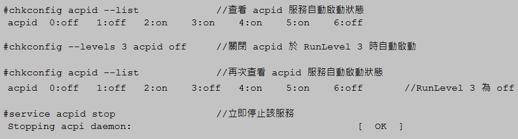
▲ 圖16 關閉 acpid 於 RunLevel 3 時自動啟動，並立即停止該服務
擴充 YUM 套件管理工具 RPM 數量
雖然在上一篇文章中，我們已經將 YUM 套件管理工具的鏡像站台，設定為台灣鏡像站台來加快套件下載速度。不過雖然目前官方的 YUM 套件管理工具中套件數量已經不少，但目前官方套件數量中僅包含必要套件，例如常常用來管理 MySQL 資料庫的 PhpMyAdmin 套件，就未包含在內建的 YUM 套件庫 (RPM Repository) 當中。
雖然我們可以自行下載 PhpMyAdmin 套件並手動安裝到系統上，但筆者個人的主機管理習慣，是盡量使用 YUM 套件管理工具來處理 RPM 套件的安裝、移除、升級。因此在這裡要介紹讀者一套名為 RPM forge 的套件，我們可以安裝它來擴充 YUM 套件管理工具中的套件數量。
RPMforge 支援許多 Linux 發行版本，例如 RHEL、Fedora Core、CentOS、Scientific、Aurora 等。將 RPMforge 安裝於系統之後，可擴充系統 YUM 套件管理工具中的套件數量，例如剛才提到的 PhpMyAdmin 套件。我們可以在安裝 RPMforge 之後，透過 yum 指令來進行安裝，而不需要自行上網尋找該套件。
下列操作中，我們可以看到當系統尚未安裝 RPMforge 以前，其 YUM 管理工具套件庫 (RPM Repository) 中搜尋不到 PhpMyAdmin 套件。當安裝 RPMforge 之後，便可順利透過 yum 指令來進行安裝。每次安裝時，請安裝最新發行穩定版本的 RPMforge-Release，並注意您使用的 CentOS 主機是 32 位元或 64 位元的作業系統版本（本次實作為使用 CentOS 5.5 32 位元版本）：
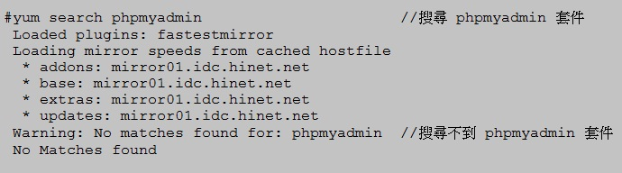
▲ 圖17 未安裝 RPMforge 以前搜尋不到 PhpMyAdmin 套件
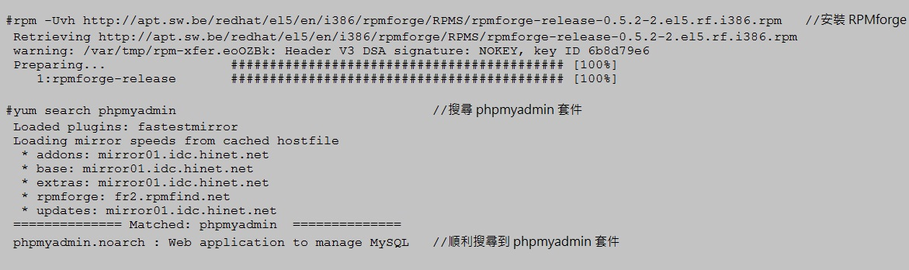
▲ 圖18 安裝 RPMforge 後可順利搜尋到 PhpMyAdmin 套件
結語
雖然網路上 Linux 相關參考資源及教學非常多，但筆者發現許多 Linux 初學者可能對於 CentOS 主機的系統基礎設定不熟悉，或者未設置相關設定，導致在學習上發生瓶頸。例如沒有把 YUM 套件管理工具的預設鏡像站台由國外設回國內，因此認為 CentOS 主機套件安裝速度相當緩慢。追究其原因，只是因為未更改鏡像站台至國內，加上所處的網路環境頻寬不是很理想，導致下載套件及相依套件時速度緩慢，而造成使用者的誤會。又或者因為沒有把 SELinux 安全機制暫時關閉，所架設的網路服務因而違反了 SELinux 的安全機制，導致服務啟動時被阻擋住而無法啟動成功。
若因為不熟悉這些設定而放棄學習 CentOS，是非常可惜的一件事。筆者期望能夠透過這三篇 CentOS 基礎設定文章，讓讀者對於 CentOS 作業系統有初步的認識，並在配合相關基礎設定的實作之後，能夠協助讀者建立一個屬於自己，順手好用又安全的 CentOS 作業系統。
您也許有興趣閱讀以下文章:
- CentOS 基礎設定（中） - 2011-07-11
- CentOS 基礎設定（上） - 2011-06-25
專欄總覽


E-Mail：contact@openfoundry.org Address：台北市南港區研究院路2段128號 中央研究院資訊科學研究所 . 隱私權條款. 使用條款